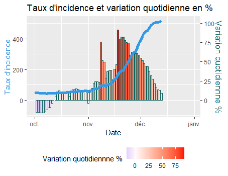

Data Covid-19
Data Covid-19
Projet personnel : Decembre 2019 - en cours
Langage utilisé : R
Objectifs :
Bénéficier d'un suivi de la pandémie de Covid-19 grâce aux données accessbile via l'open data.
les données utilisées
Version 01 : Site template
un peu de code
.some-class {
background-color: red;
}Version 02 : Site Boilerplate
La première mise en place du site ne me satisfaisant pas pleinement, j'ai entrepris sa refonte à l'aide d'un boilerplate cette fois. Un boilerplate correspond à un moule beaucoup plus adaptable qu'un template, ainsi le site est plus flexible et adaptable à mes besoins. C’est cette version du site sur laquelle il est possible de naviguer aujourd’hui.

La connaissance marketing (construction des variables d’intérêts) puis les techniques d’analyses de données (regroupement d’agriculteurs)
couplé à l’expérience du directeur d’étude ont permis de proposer au client final de l’étude une segmentation en 3 groupes.
C’est donc l’aller-retour entre le directeur d’étude et le data analyst qui à permis de pousser l’analyse au mieux.